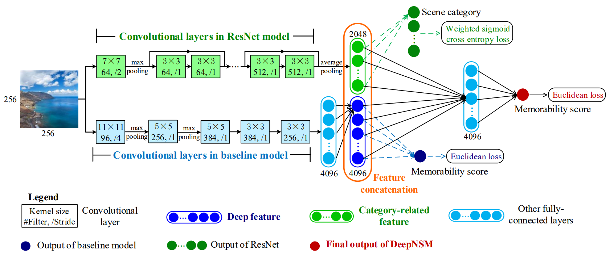

Lu, Jiaxin
Biography
I am a Researcher of Tencent Technology (Beijing) Co., Ltd., China. I am working on the reasearch topics of computer vision. I obtained the M.Sc. degree in 2019 at the MC^2 Lab, Beihang University, P.R. China, under the supervision Prof. Mai Xu, and obtained the M.Sc. degree in 2012 at Beihang University, P.R. China.
News
- One paper is acepted to IEEE Transactions on Image Processing (T-IP), which is collaborated with my husband :).
Selected Publications
|  |
Understanding and Predicting the Memorability of Outdoor Natural Scenes
Jiaxin Lu, Mai Xu, Ren Yang and Zulin Wang.
IEEE Transactions on Image Processing (T-IP), 2020.
|
Awards
- Winner of Three Minute Competition, IEEE ICME 2019.
- Outstanding Graduate Students Award, Beijing, China.
Teaching
- Spring 2017: Digital Image Processing, Beihang University, Teaching Assistant